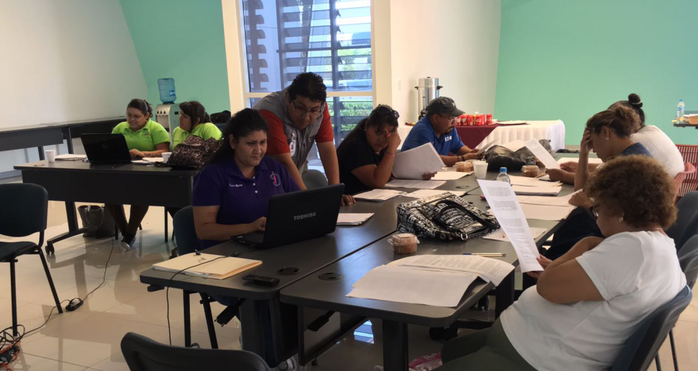
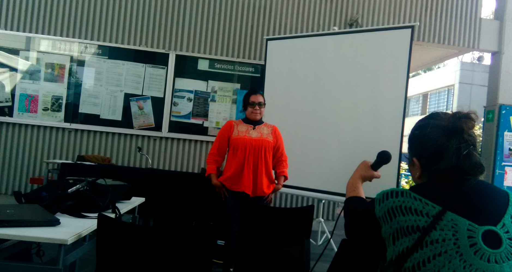
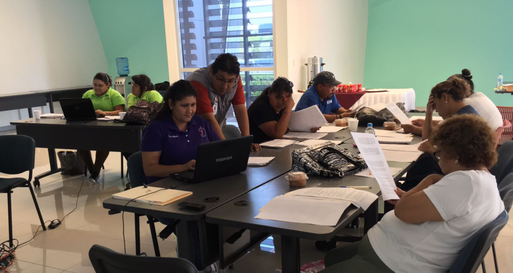
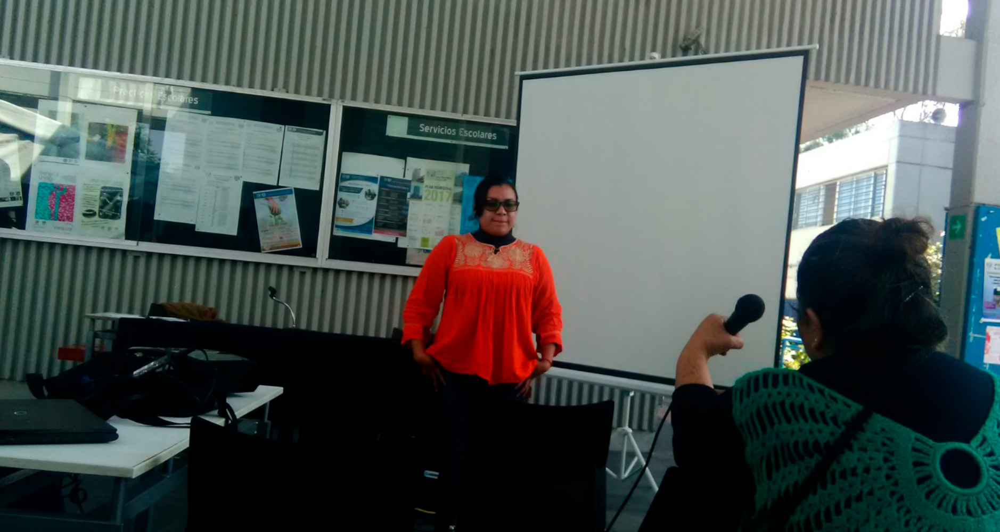

¿Quiénes somos?
El Centro de Investigación y Capacitación para la Oranización Social - El Caracol - A. C. (CICOS - El Caracol - A. C.) es una asociación civil que busca contribuir en la acción organizativa y transformadora de la realidad social a partir de la participación de la comunidad en el impulso y fortalecimiento de programas y proyectos productivos, autogestivos, sociales, solidarios y sustentables a través de implementar acciones orientadas a la investigación multidisciplinaria, educación y promoción social en el marco de la economía solidaria.
Un programa pilar que nació con la Asociación y que se articuló detro de los proyectos y la personalidad de CICOS A. C.
Más informaciónUn programa prioritario que fue pensado en coherencia con la naturaleza y la visión de la Asociación.
Una larga historia...
A finales del año 2015 y durante 2016 algunos Cooperativistas nos reunimos para analizar las necesidades de las Cooperativas de la Ciudad de México, para lo cual, se debatieron diferentes temas entre los que destacan: La relación de las Cooperativas con el Estado y el Capitalismo, PyMEs y Cooperativas, Políticas Públicas, etc. Concluíamos que, es más importante la formación de Cooperativistas que la formación de Cooperativas, por lo tanto, el Cooperativistas debe considerarse un activista o luchador social forjador de una nueva economía, por lo que debe trabajar dos ejes principales: Formación Técnica: el Cooperativista debe contar con el conocimiento técnico para una mejor producción, así como de los conocimientos técnicos necesarios para administrar las Organizaciones Cooperativas de la mejor forma posible, tales como: contabilidad básica, administración e inversión de recursos, planeación de la cooperativa, etc. Partiendo claro de la distribución equitativa del trabajo. Formación Cooperativa: Es necesario que las personas que se participan o desean conformar una cooperativa puedan formarse como Cooperativistas, para lo cual, deben comprender el contexto económico, social y político del entorno en el que se desarrolla su Organización Cooperativa, incluyendo la historia del Cooperativismo, sus valores y principios Muchas fueron las pláticas sobre la figura jurídica con lo cual seguiríamos nuestros objetivos, concluyendo que la Asociación Civil era, en ese momento, lo más idóneo y el 7 de abril de 2017 protocolizamos nuestra Organización que a la fecha sigue trabajando muy a pesar de las dificultades que hemos presentado.
Organigrama: Como funciona el equipo de Carac@les
 




¡Conoce al equipo!
Descubre a las personas que conformamos y colaboramos en CICOS - El Caracol - A. C. ¡Trabajamos codo a codo para cumplir con las metas!